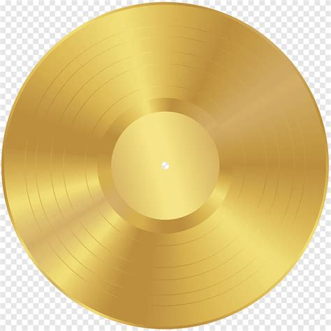

Aitana Ocaña Morales, más conocida como Aitana, es una cantante y compositora española, que nació el 27 de junio de 1999. Se hizo conocida por participar en la novena temporada de Operación Triunfo, donde obtuvo el segundo puesto del concurso musical, siendo una de los seis candidatos para representar a España en el Festival de la Canción de Eurovisión 2018, con “Arde”, en solitario escrita por Alba Reig de Sweet California y “Lo malo” en dueto con Ana Guerra.
Con 18 años recién cumplidos fue una de las finalistas del programa líder de la tv. Su manera de transmitir emociones y su carisma le granjearon el cariño del público, y su voz, un auténtico instrumento único en el mundo, le ha hecho ganar millones de fans en España y en el mundo. A su salida de emprendió una meteórica carrera de logros y reconocimientos, que a lo largo de los últimos meses le han hecho batir récords digitales y acumular cifras nunca vistas hasta la fecha en un artista nuevo en España.
Al finalizar el consurso, Aitana firmó un contrato con la discográfica Universal Music Spain y lanzó su sencillo debut, “Teléfono”. El tema se convirtió en su segundo sencillo número uno que también ha alcanzado el cuarto disco de platino. El lanzamiento de su primer EP, “Tráiler”, con temas en inglés y español, fue producido el 30 de noviembre de 2018 y alcanzó disco de platino en España.
| Título | Detalles | Certificaciones | Portada disco |
|---|---|---|---|
| Tráiler |
|
 |
|
| Spoiler |
|
|
|
| 11 razones |
|
|
|
| Alpha |
|
|
 |
Play Tour
11 razones tour
11 razones + tour
Alpha tour